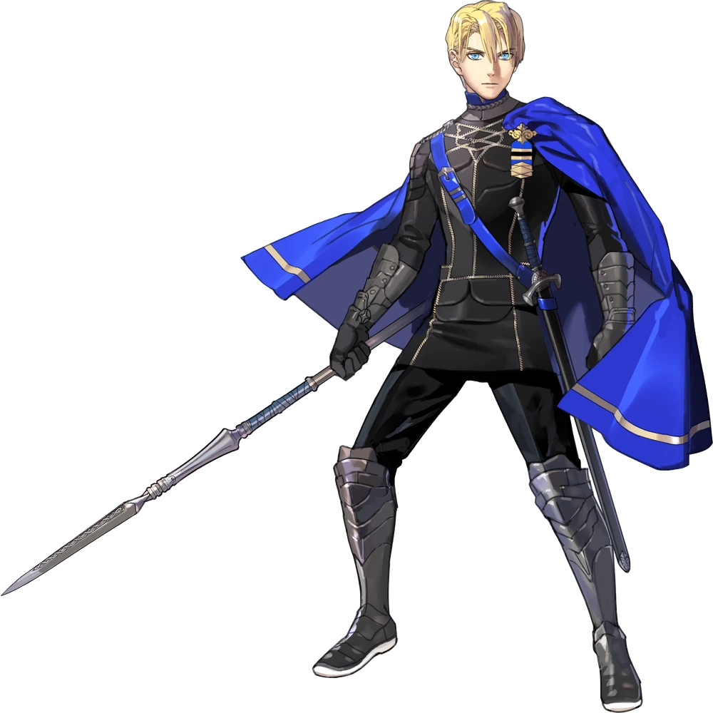

Biography Dimitri Alexandre Blaiddyd is the heir to the throne of the Holy Kingdom of Faerghus and the leader of the Blue Lions house at Garreg Mach Monastery. Raised as a prince and trained from a young age to become a capable ruler, Dimitri possesses exceptional skill with the lance and demonstrates a strong sense of duty toward his kingdom and its people. Beneath his composed demeanor, however, he carries the emotional weight of past tragedies that continue to influence his decisions throughout the story.
Personality At the beginning of the game, Dimitri is polite, compassionate, and deeply respectful toward both his classmates and professors. He consistently places the well-being of others before his own and strives to fulfill the responsibilities expected of a future king. As the story progresses, Dimitri is forced to confront grief, guilt, and the desire for revenge, creating one of the most dramatic character arcs in Fire Emblem: Three Houses. Despite these struggles, his determination to protect those he cares about remains a defining part of his character.
Role in the Blue Lions Route As the leader of the Blue Lions, Dimitri serves as the central figure of this route. His personal journey shapes many of the story's major events and themes, including justice, redemption, forgiveness, and the responsibilities of leadership. Guided by Byleth and supported by his classmates, Dimitri gradually learns to reconcile with his past while embracing the qualities necessary to become a compassionate ruler. His development is one of the defining aspects of the Blue Lions storyline.
Relationships Dimitri shares close bonds with every member of the Blue Lions house, many of whom have known him since childhood. His relationship with Dedue is built upon unwavering loyalty and mutual trust, while his friendships with Felix, Sylvain, and Ingrid reflect years of shared experiences and personal history. As his professor, Byleth becomes one of Dimitri's most important mentors, providing guidance and support during the most difficult moments of his journey.